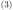
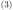
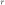
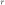

Next: December – Asymptotic decay Up: Blog posts 2022 Previous: August – dB logplot Contents
Homography
can be used to “change the perspective” of an image (set of vectors). I have used homography for the satellite footprint in my simulations: for elevation angles smaller than
 you can conveniently map transmitters inside the elliptical footprint to a circle for which the radially symmetric antenna pattern function can be used. The following homography matrix
you can conveniently map transmitters inside the elliptical footprint to a circle for which the radially symmetric antenna pattern function can be used. The following homography matrix  transforms an ellipse
of parameters  and
transforms an ellipse
of parameters  and  to a circle of radius  so that the right focus point maps to origo.
to a circle of radius  so that the right focus point maps to origo.

Here is a GNU Octave code:
%%Changes ellipses with parameters a > b perspective to a sphere of radius r centered in origo. Vectors to be transformed are given in 2x1000 matrix refc.
function points = homography(refc, a,b,r)
c = sqrt(a^2 - b^2);
%%Construct the homography matrix.
X1 = [[-a -0 -1 0 0 0 a*r 0*r r]; [0 0 0 -a -0 -1 a*0 0*0 0]];
X2 = [[-c -b^2/a -1 0 0 0 c*0 b^2/a*0 0]; [0 0 0 -c -b^2/a -1 c*r b^2/a*r r]];
X3 = [[a 0 -1 0 0 0 -a*-r 0*-r -r]; [0 0 0 a -0 -1 -a*0 0*0 0]];
X4 = [[-c b^2/a -1 0 0 0 c*0 -b^2/a*0 0]; [0 0 0 -c b^2/a -1 c*-r b^2/a*r -r]];
P = [X1; X2; X3; X4];
[U,S,V] = svd(P); %Singular value composition.
h = V(:,9);
H = reshape(h, 3, 3)';
points = [];
for point = refc
homopoint = [point; 1]; %Point presented in homogeneous coordinates.
homopoint = H*homopoint;
homopoint = [homopoint(1)/homopoint(3); homopoint(2)/homopoint(3)];
points = [points homopoint];
end
figure(1)
plot(points(1,:), points(2,:), 'b','linewidth',10);
end
In the following, we are rotating a “pyramid”. It can be seen how the homography mapping can be interpreted as a change of perspective.

References: